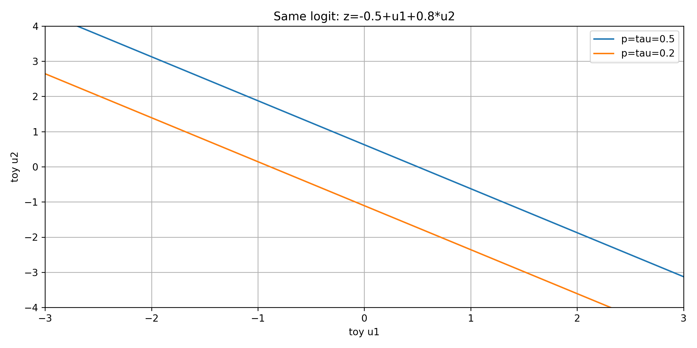
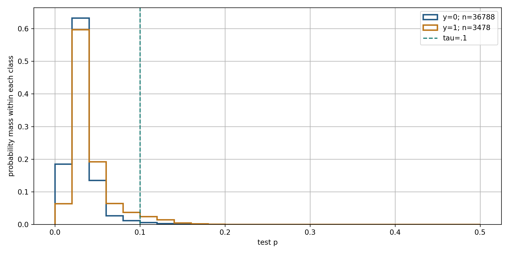

PGS.TS. Nguyễn Văn Hậu · Khoa Công nghệ Thông tin · Trường Đại học Công nghệ Kỹ thuật Hưng Yên.
Tuyến chính dùng phép tính vô hướng. Mục này giải thích nền toán và những điều kiện bị lược giản trong trình chiếu; không yêu cầu thuộc chứng minh trước giờ học.
Giả định quan sát độc lập có điều kiện cho likelihood này; sigmoid mô hình hóa p(y=1|x). Cực đại likelihood tương đương cực tiểu BCE. L2 tương ứng thêm mức phạt theo hệ số, không theo nhãn dự đoán.
Ma trận thiết kế mở rộng có cột 1 cho intercept. Hessian bán xác định dương nên BCE lồi theo tham số của logit tuyến tính. Lồi không tự suy ra nghiệm hữu hạn hoặc duy nhất: tách lớp, hạng ma trận và mức phạt cần xét riêng. Khi λ>0 phạt toàn bộ w, không phạt b, có cả hai lớp và dữ liệu hữu hạn, mục tiêu có nghiệm hữu hạn; Hessian dương xác định với phần phạt và cột intercept cho tính duy nhất.
Với tham số hữu hạn, loss từng mẫu dương, nên không đạt 0. Không vẽ một đáy hữu hạn giả cho toy này. Với L2 λ=0,1, nghiệm của bài được giải và kiểm gradient: w≈1,507674, b≈−0,753837, Jλ≈0,356032.
Biên là siêu phẳng trong không gian đặc trưng đưa vào mô hình. Với hai biến toy z=−0,5+u1+0,8u2, biên τ=0,5 có u2=(0,5−u1)/0,8. Đổi τ dịch biên, không đổi p. Nếu dùng biến đổi phi tuyến của đầu vào, biên trong không gian dữ liệu gốc có thể không tuyến tính. plot_lab.py vẽ cả hai biên đúng tọa độ.

Càng tăng C càng giảm mức phạt khi n giữ cố định. Không thay λ=1/C trong quy ước mean BCE này. Thay scaler đổi cách phạt hệ số; không khẳng định chuẩn hóa giữ cùng nghiệm L2 trong đơn vị gốc. Chuyển một model đã fit về đơn vị gốc giữ đúng dự đoán bằng wraw=w/s và braw=b−Σwjμj/sj.
AP phải gộp các mẫu có score bằng nhau theo cùng mức ngưỡng. Với bốn score [.9,.7,.4,.1], y=[1,0,1,0], AP=5/6 và AUC=3/4. Đường reliability là mô tả theo bin trên lịch sử, không là bằng chứng chắc chắn của calibration tương lai. BCE/Brier có cả độ phân giải và độ lệch hiệu chỉnh; muốn kết luận riêng calibration phải phân tích thêm, tôn trọng split. Histogram dưới chia theo lớp và chuẩn hóa trong từng lớp để tránh lớp đông che lớp ít.

Ta dự đoán nguy cơ giao trễ tại lúc đơn được duyệt. Mô hình tạo một xác suất, còn chính sách dùng xác suất đó để quyết định cảnh báo. Vòng học vẫn gồm dự đoán, tính mất mát, tính gradient và cập nhật như Bài 4. Case Olist giúp kiểm cả thao tác toán học và giới hạn của kết quả trên dữ liệu thật.
Tham khảo: https://www.kaggle.com/datasets/olistbr/brazilian-ecommerce
Bài 4 và Bài 5 cùng dùng đơn hàng nhưng trả lời hai câu hỏi khác nhau. Thời gian giao là số liên tục, còn nhãn trễ so với ngày hẹn có hai lớp. Logistic mô hình hóa xác suất lớp 1 và thường được dùng để phân loại. Ta giữ các nguyên tắc về thời điểm dữ liệu, train và đánh giá đã học.
Tham khảo: https://www.kaggle.com/datasets/olistbr/brazilian-ecommerce
Mỗi mục tiêu được gắn với một sản phẩm có thể kiểm. Biết sigmoid chưa đủ nếu chưa tính được nhãn theo ngưỡng. Biết gradient chưa đủ nếu chưa tính lại loss sau cập nhật. Năm chặng được nối bằng đầu ra cần cho chặng kế tiếp, và phiếu cuối bài kiểm cả phép tính lẫn cách đọc case.
Tham khảo: https://www.kaggle.com/datasets/olistbr/brazilian-ecommerce
Nhãn được định nghĩa bằng hai ngày lịch. Đơn giao lúc 18 giờ trong ngày hẹn vẫn có nhãn 0 dù đã qua đầu ngày. Đơn giao sang ngày hôm sau có nhãn 1. Ký hiệu chỉ báo bằng 1 khi điều kiện trong ngoặc đúng và bằng 0 khi điều kiện sai.
Tham khảo: https://www.kaggle.com/datasets/olistbr/brazilian-ecommerce
Ngày giao thực tế chỉ biết sau khi sự kiện xảy ra nên không thể dùng làm đầu vào tại lúc duyệt. Sáu đặc trưng được xây từ dữ liệu đặt hàng, hẹn giao và metadata. Dữ liệu công bố không chứng minh toàn bộ metadata đã tồn tại đúng ở thời điểm lịch sử đó. Vì vậy đây là giả định cần ghi lại khi diễn giải case hoặc xây hệ thống vận hành.
Tham khảo: https://www.kaggle.com/datasets/olistbr/brazilian-ecommerce
Bốn hàng trên trang là đơn thật trong tập train. Ta chọn xác định hai đơn mỗi lớp, rồi đối chiếu hai ngày gốc để tạo nhãn. Tỉ lệ trễ một nửa trong bảng do cách chọn minh họa, không đại diện cho dữ liệu. Tệp four_real_orders.csv giữ ID đầy đủ để truy lại dữ liệu gốc.
Tham khảo: https://www.kaggle.com/datasets/olistbr/brazilian-ecommerce
Một đơn có thể có nhiều dòng mặt hàng nhưng chỉ tạo một hàng học sau tổng hợp. Train có 941 đơn trễ trong 29031 đơn đủ điều kiện, khoảng 3,24 phần trăm. Đây là bài toán lệch lớp, nên đo accuracy đơn lẻ sẽ chưa đủ. Bảng bốn đơn trước đó dùng để hiểu nhãn, còn tỉ lệ này dùng để hiểu quần thể train.
Tham khảo: https://www.kaggle.com/datasets/olistbr/brazilian-ecommerce
x là thông tin của đối tượng đang dự đoán. y là kết quả đã quan sát dùng để học hoặc đánh giá, còn p là ước lượng của mô hình. Chính sách so p với ngưỡng để tạo nhãn dự đoán. Quy ước toàn bài là lớp 1 khi p lớn hơn hoặc bằng ngưỡng, kể cả trường hợp bằng nhau.
Tham khảo: https://www.kaggle.com/datasets/olistbr/brazilian-ecommerce
Hãy cho sinh viên chọn trước khi chuyển trang lời giải. A nhầm ngày lịch với đầu ngày hẹn. B so đúng hai ngày lịch. C thiếu mốc so sánh. D dùng thông tin tương lai tại lúc duyệt đơn.
Tham khảo: https://www.kaggle.com/datasets/olistbr/brazilian-ecommerce
Đáp án đúng là B. A nhầm ngày lịch với đầu ngày hẹn. B so đúng hai ngày lịch. C thiếu mốc so sánh. D dùng thông tin tương lai tại lúc duyệt đơn.
Tham khảo: https://www.kaggle.com/datasets/olistbr/brazilian-ecommerce
Chặng đầu xác định đối tượng, mốc dự đoán và nhãn trước khi chọn công thức. ID nối một hàng đã tổng hợp với dữ liệu gốc. Ví dụ cân bằng hai lớp giúp hiểu nhãn, còn train cho tỉ lệ 3,24 phần trăm. Ta đã biết mô hình cần trả về p, nhưng chưa biết cách xây p từ đầu vào.
Tham khảo: https://www.kaggle.com/datasets/olistbr/brazilian-ecommerce
Điểm tuyến tính là tổng hệ số chặn và đóng góp của đầu vào. Với x bằng 3, mô hình minh họa tạo z bằng âm 0,8. Khi x thay đổi, z có thể âm hoặc lớn hơn 1, vì vậy chưa thể đọc trực tiếp là xác suất. Ta cần một phép biến đổi giữ thứ tự và đưa điểm vào khoảng xác suất.
Tham khảo: https://www.cs.cornell.edu/courses/cs4780/2024sp/lectures/lecturenote06.html
Sigmoid biến mỗi điểm hữu hạn thành một số giữa 0 và 1. Cơ số e là hằng số của hàm mũ tự nhiên, còn sigma là tên phép biến đổi. Ba mốc âm 2, 0 và 2 giúp đọc đường cong cùng các giá trị đã tính. Xác suất ở hai đầu tiến gần 0 hoặc 1 nhưng không đạt hai biên khi z hữu hạn về mặt toán học.
Tham khảo: https://www.cs.cornell.edu/courses/cs4780/2024sp/lectures/lecturenote06.html
Khoảng cách 300 km được biểu diễn bằng x bằng 3 khi một đơn vị là 100 km. Thay x vào tham số mô phỏng cho điểm âm 0,8. Sigmoid của điểm đó xấp xỉ 0,310, tức mô hình gán nguy cơ trễ khoảng 31 phần trăm. Tham số này chỉ dùng để tính tay và chưa là mô hình sáu đặc trưng Olist.
Tham khảo: https://www.cs.cornell.edu/courses/cs4780/2024sp/lectures/lecturenote06.html
Ngưỡng là quy tắc ra quyết định sau khi mô hình đã tạo xác suất. Cùng p khoảng 0,310 ở dưới 0,50 nhưng ở trên 0,20 nên hai quyết định khác nhau. Tham số và xác suất không thay đổi trong phép thử này. Hành động cảnh báo cũng không thay nhãn thực tế sau khi giao.
Tham khảo: https://www.cs.cornell.edu/courses/cs4780/2024sp/lectures/lecturenote06.html
Hai đồ thị giữ cùng trục và miền vẽ để so tham số. Khi b bằng 0, thay w làm thay tốc độ và chiều thay đổi p theo x. Khi w bằng 1, tăng b dịch mốc p bằng 0,5 sang trái vì cần x nhỏ hơn để z bằng 0. Nếu w bằng 0, xác suất không đổi theo x và bằng sigmoid của b.
Tham khảo: https://www.cs.cornell.edu/courses/cs4780/2024sp/lectures/lecturenote06.html
Odds so khả năng lớp 1 với khả năng lớp 0. p bằng 0,2 cho odds một phần tư; khi odds nhân đôi thành một phần hai, p mới là một phần ba. Logistic giả định log tự nhiên của odds bằng điểm tuyến tính z. Hệ số đọc theo đơn vị đầu vào và giữ các biến khác cố định, nên đổi từ 100 km sang km phải đổi w tương ứng.
Tham khảo: https://www.cs.cornell.edu/courses/cs4780/2024sp/lectures/lecturenote06.html
Hãy cho sinh viên chọn trước khi chuyển trang lời giải. A nhầm ngưỡng với xác suất. B ngưỡng không sửa tham số. C đúng phép so p với tau. D nhầm ước lượng với kết quả chắc chắn.
Tham khảo: https://www.cs.cornell.edu/courses/cs4780/2024sp/lectures/lecturenote06.html
Đáp án đúng là C. A nhầm ngưỡng với xác suất. B ngưỡng không sửa tham số. C đúng phép so p với tau. D nhầm ước lượng với kết quả chắc chắn.
Tham khảo: https://www.cs.cornell.edu/courses/cs4780/2024sp/lectures/lecturenote06.html
Cả hai dự đoán đều ở dưới ngưỡng một nửa trong khi nhãn thực tế bằng 1. Dự đoán 0,01 gần như phủ nhận nhãn đúng và bị phạt lớn hơn 0,49. Loss âm log xác suất của nhãn đúng đo mức phạt đó một cách liên tục. Ta có thể dùng loss này để học tham số thay vì đưa nhãn đã cắt ngưỡng vào gradient.
Tham khảo: https://www.cs.cornell.edu/courses/cs4780/2024sp/lectures/lecturenote06.html
BCE gom hai nhánh mất mát vào một công thức. Nhãn 1 giữ hạng âm log p, còn nhãn 0 giữ hạng âm log một trừ p. Với cùng p bằng 0,9, loss nhỏ nếu nhãn đúng là 1 và lớn nếu nhãn đúng là 0. Trục ngang ở hình này là p của một mẫu, chưa là tham số w hoặc b.
Tham khảo: https://www.cs.cornell.edu/courses/cs4780/2024sp/lectures/lecturenote06.html
Loss một mẫu là một số, còn J lấy trung bình loss của các mẫu trên cùng bộ tham số. Khi b và w đều bằng 0, mọi p bằng một nửa nên bốn loss đều khoảng 0,693147. Thay tham số sẽ làm thay nhiều p cùng lúc, từ đó làm thay J. Vì vậy học tham số là tối ưu J theo w và b, khác đồ thị loss theo p của riêng một mẫu.
Tham khảo: https://www.cs.cornell.edu/courses/cs4780/2024sp/lectures/lecturenote06.html
Hãy cho sinh viên chọn trước khi chuyển trang lời giải. A dùng -ln(1-p)=-ln(0,1). B dùng -ln(p) của nhãn 1. C dùng xác suất nhãn đúng làm loss. D chép p thay công thức BCE.
Tham khảo: https://www.cs.cornell.edu/courses/cs4780/2024sp/lectures/lecturenote06.html
Đáp án đúng là A. A dùng -ln(1-p)=-ln(0,1). B dùng -ln(p) của nhãn 1. C dùng xác suất nhãn đúng làm loss. D chép p thay công thức BCE.
Tham khảo: https://www.cs.cornell.edu/courses/cs4780/2024sp/lectures/lecturenote06.html
Infographic giữ một mẫu từ đầu vào tới xác suất và quyết định. Odds tương ứng được tính từ cùng điểm âm 0,8. Nhãn thật quyết định chọn nhánh BCE, nên hai dòng loss là hai tình huống thay thế cho cùng p. J chỉ xuất hiện khi gom loss của cả tập, và chặng tiếp dùng J để học tham số.
Tham khảo: https://www.cs.cornell.edu/courses/cs4780/2024sp/lectures/lecturenote06.html
Bốn mẫu được thiết kế để kiểm từng phép tính GD, không phải bốn đơn thật ở đầu bài. x có thang riêng nên giá trị âm không là khoảng cách vật lý âm và cũng chưa được gọi là chuẩn hóa về trung bình 0. Khởi tạo hai tham số bằng 0 cho bốn điểm số bằng 0 và xác suất một nửa. Ta dùng BCE trung bình chưa thêm L2 trong hai vòng tính tay.
Tham khảo: https://www.cs.cornell.edu/courses/cs4780/2024sp/lectures/lecturenote06.html
Đạo hàm của BCE theo p có mẫu số p nhân một trừ p. Đạo hàm sigmoid theo z có đúng thừa số này ở tử nên triệt tiêu khi áp dụng quy tắc chuỗi. Kết quả p trừ y là đạo hàm theo điểm số của một mẫu. Do z bằng b cộng wx, đạo hàm theo w còn nhân x và theo b nhân 1.
Tham khảo: https://www.cs.cornell.edu/courses/cs4780/2024sp/lectures/lecturenote06.html
Bảng giữ mỗi mẫu A đến D qua tất cả cột. p trừ y bằng một nửa ở hai mẫu lớp 0 và âm một nửa ở hai mẫu lớp 1. Nhân thêm x tạo đóng góp theo w, nên mẫu B có đóng góp này bằng 0 dù p trừ y khác 0. Mẫu D đóng góp âm 1 và có ảnh hưởng lớn hơn mẫu C theo w ở trạng thái hiện tại.
Tham khảo: https://www.cs.cornell.edu/courses/cs4780/2024sp/lectures/lecturenote06.html
Batch GD gom đóng góp của cả bốn mẫu rồi chia số mẫu. Tổng theo w bằng âm 2 nên gradient bằng âm một nửa. Tổng theo b bằng 0 do hai đóng góp dương và hai âm triệt tiêu ở bước này. Vector gradient vẫn khác 0 vì thành phần theo w chưa bằng 0.
Tham khảo: https://www.cs.cornell.edu/courses/cs4780/2024sp/lectures/lecturenote06.html
Hai gradient vừa tính dùng cùng tham số cũ bằng 0. Cập nhật w làm nó tăng lên một nửa, còn b giữ bằng 0 vì gradient tương ứng bằng 0. Hai phép gán chỉ thực hiện sau khi tính đủ gradient cũ. Từ đây mọi dự đoán và loss mới phải dùng cùng trạng thái một nửa và 0.
Tham khảo: https://www.cs.cornell.edu/courses/cs4780/2024sp/lectures/lecturenote06.html
Tham số mới làm các điểm số lần lượt bằng âm một nửa, 0, một nửa và 1. Sigmoid cho bốn xác suất được ghi trên bảng và hình. Mẫu B có x bằng 0 và b chưa đổi nên p vẫn bằng một nửa. Ta dùng các xác suất chưa làm tròn để tính BCE và gradient vòng sau.
Tham khảo: https://www.cs.cornell.edu/courses/cs4780/2024sp/lectures/lecturenote06.html
Hai mẫu A và C có loss bằng nhau do tính đối xứng của sigmoid ở hai điểm âm và dương một nửa. Mẫu B vẫn có loss khoảng 0,693147 còn mẫu D giảm còn khoảng 0,313262. Trung bình bốn loss cho J mới khoảng 0,488641, thấp hơn ban đầu. Đây hoàn thành vòng học từ trạng thái cũ tới kiểm loss mới và chưa là kết luận trên test.
Tham khảo: https://www.cs.cornell.edu/courses/cs4780/2024sp/lectures/lecturenote06.html
Vòng thứ hai lấy xác suất của trạng thái một nửa và 0 làm dữ kiện cũ. Trung bình đóng góp theo w khoảng âm 0,323241, còn trung bình p trừ y khoảng 0,057765. Cập nhật với eta bằng 1 cho w khoảng 0,823241 và b khoảng âm 0,057765. Tính lại loss bằng tham số mới cho khoảng 0,394775, tiếp tục giảm trong ví dụ này.
Tham khảo: https://www.cs.cornell.edu/courses/cs4780/2024sp/lectures/lecturenote06.html
Hãy cho sinh viên chọn trước khi chuyển trang lời giải. A toàn gradient chưa bằng 0. B vòng thứ hai đã cho g_b khác 0. C gradient BCE dùng xác suất p. D cập nhật đúng trạng thái và tiếp tục lặp.
Tham khảo: https://www.cs.cornell.edu/courses/cs4780/2024sp/lectures/lecturenote06.html
Đáp án đúng là D. A toàn gradient chưa bằng 0. B vòng thứ hai đã cho g_b khác 0. C gradient BCE dùng xác suất p. D cập nhật đúng trạng thái và tiếp tục lặp.
Tham khảo: https://www.cs.cornell.edu/courses/cs4780/2024sp/lectures/lecturenote06.html
Ta đã tính trọn hai vòng GD trước thời gian nghỉ. Vòng đầu b giữ nguyên nhưng vòng thứ hai b thay đổi. Sau giờ nghỉ, ta nhìn quá trình qua nhiều bước và xem điều gì xảy ra khi dữ liệu tách hoàn toàn hai lớp. Hãy giữ chuỗi trạng thái cũ, gradient cũ, tham số mới và loss mới khi quay lại.
Tham khảo: https://www.cs.cornell.edu/courses/cs4780/2024sp/lectures/lecturenote06.html
Mã thực hiện cùng vòng học vừa tính tay. Hai gradient được giữ trong biến riêng trước khi gán w và b mới. expit tính sigmoid ổn định và logaddexp giúp tính BCE từ logit mà tránh log của xác suất đã làm tròn về 0. Sau cập nhật cần tính z mới cho J mới; ngưỡng cảnh báo không tham gia gradient của BCE.
Tham khảo: https://www.cs.cornell.edu/courses/cs4780/2024sp/lectures/lecturenote06.html
Các đường dùng cùng bốn mẫu và cùng trạng thái khởi tạo. Chỉ learning rate thay đổi, nên khác biệt đường loss đến từ độ dài bước. Những bước rất lớn có thể làm loss tăng ở một số vòng, và kết quả của toy không là bảo đảm tổng quát cho tập khác. Notebook cho thay eta và quan sát cả tham số lẫn loss.
Tham khảo: https://www.cs.cornell.edu/courses/cs4780/2024sp/lectures/lecturenote06.html
Toy có hai lớp tách hoàn toàn bằng một điểm nằm giữa x bằng 0 và 1. Trên tia w bằng 2k và b bằng âm k, xác suất tiến tới đúng nhãn khi k tăng. J tiến về 0 nhưng với tham số hữu hạn mỗi loss vẫn dương nên không có nghiệm cực tiểu hữu hạn của mục tiêu không phạt này. Hình chỉ vẽ miền hữu hạn của BCE và đi kèm đường đồng mức cùng tọa độ, không chứng minh bằng hình vẽ đơn lẻ.
Tham khảo: https://www.cs.cornell.edu/courses/cs4780/2024sp/lectures/lecturenote06.html
L2 thêm mức phạt bình phương hệ số w vào BCE trung bình. Hệ số chặn không được phạt trong quy ước này. Gradient theo mỗi w thêm lambda nhân w, còn gradient theo b giữ trung bình p trừ y. Với toy có cả hai lớp và lambda bằng 0,1, nghiệm tối ưu hữu hạn khoảng w bằng 1,507674 và b bằng âm 0,753837; chứng minh điều kiện ở tài liệu mở rộng.
Tham khảo: https://www.cs.cornell.edu/courses/cs4780/2024sp/lectures/lecturenote06.html
Logistic là mô hình, BCE và L2 là mục tiêu, còn GD hoặc newton-cg là cách giải mục tiêu. Case thật dùng newton-cg để đạt nghiệm đủ chính xác, trong khi các vòng GD giúp hiểu cơ chế. Với quy ước không trọng số của scikit-learn 1.6.1, C bằng 1 tương ứng lambda bằng một trên n khi ta viết BCE trung bình cộng lambda trên 2 nhân chuẩn w bình phương. Đổi cách chuẩn hóa loss hoặc thêm trọng số sẽ phải kiểm lại quan hệ này.
Tham khảo: https://scikit-learn.org/1.6/modules/linear_model.html#logistic-regression
Infographic gom các bước đã xuất hiện trong hai vòng tính tay và mã. Mỗi thành phần gradient dùng xác suất của trạng thái cũ. Các giá trị loss đi kèm tham số cụ thể nên có thể chạy lại để đối chiếu. L2 thay mục tiêu và gradient theo w, còn việc đánh giá case thật ở chặng tiếp vẫn cần dữ liệu tách riêng.
Tham khảo: https://www.cs.cornell.edu/courses/cs4780/2024sp/lectures/lecturenote06.html
Sáu đặc trưng mô tả những phần khác nhau của một đơn. Một số là tổng trên dòng hàng, còn khoảng cách là trung bình khoảng cách địa lý theo dòng. n_items đếm số dòng chứ không được diễn giải thành số loại sản phẩm khác nhau. Sau điền thiếu và chuẩn hóa, sáu u được nhân hệ số tương ứng rồi cộng với b để tạo một z.
Tham khảo: https://www.kaggle.com/datasets/olistbr/brazilian-ecommerce
Chia tập theo thời điểm phê duyệt giữ thứ tự lịch sử. Train và validation còn yêu cầu kết quả giao đã biết trước mốc cắt tương ứng. Test giữ nhóm cuối cùng đã hoàn tất đủ điều kiện nên không đại diện tất cả đơn phát sinh, kể cả đơn chưa giao hoặc hủy. Tỉ lệ trễ tăng từ khoảng 3,24 tới 8,64 phần trăm qua ba tập, và test này đã được xem ở các phiên bản trước.
Tham khảo: https://www.kaggle.com/datasets/olistbr/brazilian-ecommerce
Khối lượng chưa biết khác một kiện hàng có khối lượng bằng 0. V4 sửa 16 đơn train có mọi thành phần khối lượng thiếu từ tổng 0 sang NaN. Imputer học trung vị từ train rồi scaler học trung bình và độ lệch chuẩn trên train đã điền thiếu. Validation và test dùng lại đúng các thống kê đó, và giá trị u âm chỉ nói thấp hơn trung bình train.
Tham khảo: https://www.kaggle.com/datasets/olistbr/brazilian-ecommerce
ID fc9bc4ba nối tiếp một đơn đã xuất hiện ở Bài 4. Bảng cho cùng sáu giá trị đi qua imputer và scaler đã học từ train. Không có giá trị thiếu ở đơn này nên bước điền thiếu không thay các giá trị gốc. Trung bình và độ lệch chuẩn vẫn đổi hệ tọa độ để tạo u cho mô hình Logistic.
Tham khảo: https://www.kaggle.com/datasets/olistbr/brazilian-ecommerce
Mỗi giá trị u được nhân đúng hệ số w cùng cột để tạo đóng góp vào logit. Biểu đồ cộng lần lượt b và sáu đóng góp, cùng các số trong bảng, để ra z. Sigmoid của z khớp predict_proba ở độ chính xác chưa làm tròn. Một hệ số dương nói về log-odds có điều kiện trong mô hình, không chứng minh tác động nhân quả của đặc trưng.
Tham khảo: https://www.kaggle.com/datasets/olistbr/brazilian-ecommerce
Ma trận dùng hàng là nhãn thực tế và cột là nhãn dự đoán. Trong 5 cảnh báo có 3 đơn thật trễ nên precision bằng 0,6. Trong 4 đơn thật trễ bắt được 3 nên recall bằng 0,75. Đây là ví dụ thiết kế với 12 mẫu để học cách đếm, không là kết quả Olist.
Tham khảo: https://www.cs.cornell.edu/courses/cs4780/2024sp/lectures/lecturenote06.html
Hãy cho sinh viên chọn trước khi chuyển trang lời giải. A trái với TP=0,FN=50. B đọc đúng ma trận và recall. C AP đọc xếp hạng điểm, không suy từ một ngưỡng. D accuracy không đo riêng calibration.
Tham khảo: https://www.cs.cornell.edu/courses/cs4780/2024sp/lectures/lecturenote06.html
Đáp án đúng là B. A trái với TP=0,FN=50. B đọc đúng ma trận và recall. C AP đọc xếp hạng điểm, không suy từ một ngưỡng. D accuracy không đo riêng calibration.
Tham khảo: https://www.cs.cornell.edu/courses/cs4780/2024sp/lectures/lecturenote06.html
K gán mỗi cảnh báo nhầm một đơn vị và mỗi bỏ sót năm đơn vị. Trong ví dụ, thêm 5 FP nhưng bớt 2 FN làm K giảm từ 22 xuống 17. Lựa chọn phụ thuộc mức phạt đã công bố, nên đổi tỉ lệ sẽ có thể đổi chính sách phù hợp. Các đơn vị này là giả định sư phạm, không được báo thành số tiền tiết kiệm.
Tham khảo: https://scikit-learn.org/1.6/modules/linear_model.html#logistic-regression
Các ngưỡng được công bố trước cùng lựa chọn không cảnh báo. Mỗi lựa chọn dùng cùng xác suất validation rồi đếm FP và FN để tính K. Ngưỡng 0,10 có K nhỏ nhất trong bảng; quy tắc hòa ưu tiên ít cảnh báo hơn và sau đó ngưỡng lớn hơn. Ta khóa tiền xử lí, mô hình và chính sách trước khi đọc kết quả test của lần tái lập này.
Tham khảo: https://scikit-learn.org/1.6/modules/linear_model.html#logistic-regression
Hãy cho sinh viên chọn trước khi chuyển trang lời giải. A giữ đúng vai trò tập dữ liệu. B dùng test để chọn chính sách. C thay phép biến đổi đã học. D ngưỡng phụ thuộc tiêu chí và giả định.
Tham khảo: https://scikit-learn.org/1.6/modules/linear_model.html#logistic-regression
Đáp án đúng là A. A giữ đúng vai trò tập dữ liệu. B dùng test để chọn chính sách. C thay phép biến đổi đã học. D ngưỡng phụ thuộc tiêu chí và giả định.
Tham khảo: https://scikit-learn.org/1.6/modules/linear_model.html#logistic-regression
Infographic nối cùng ID với sáu đặc trưng, tiền xử lí và mô hình đã học. Kiểm thủ công logit và sigmoid cho xác suất khớp thư viện. Chính sách được chọn bằng K trên validation và được khóa trước báo cáo test ở phần sau. Vì test đã từng được nhìn trong khóa học, kết quả sau khóa là tái lập lịch sử chứ không được gọi là nghiên cứu mù độc lập.
Tham khảo: https://scikit-learn.org/1.6/modules/linear_model.html#logistic-regression
Hai ma trận đọc cùng xác suất trên cùng 40266 đơn test lịch sử. Ở ngưỡng một nửa, mô hình không cảnh báo đơn nào, nên bỏ sót toàn bộ 3478 đơn trễ. Ngưỡng 0,10 đã chọn trên validation bắt được 161 đơn trễ và tạo 359 cảnh báo nhầm. Cần đọc cả số bỏ sót 3317, không chỉ phần cải thiện so với ngưỡng mặc định.
Tham khảo: https://scikit-learn.org/1.6/modules/calibration.html
Trong 520 cảnh báo có 161 đơn thật trễ nên precision khoảng 30,96 phần trăm. Nhưng trên toàn bộ 3478 đơn trễ, chỉ bắt được 161 nên recall chỉ khoảng 4,63 phần trăm. K giảm 446 đơn vị so với không cảnh báo theo giả định 1:5. Giảm chi phí giả định chưa chứng minh hệ thống đủ hữu ích hoặc đã giảm trễ sau một can thiệp thực tế.
Tham khảo: https://scikit-learn.org/1.6/modules/calibration.html
Ví dụ bốn mẫu giữ score phân biệt để tính xếp hạng bằng tay. AP lấy trung bình precision tại hai vị trí có nhãn 1 nên bằng năm phần sáu. AUC so mỗi mẫu dương với mỗi mẫu âm và có 3 trong 4 cặp đúng thứ tự nên bằng 0,75. Khi score hòa phải dùng quy ước tie đúng, và AP tổng quát dùng mức tăng recall nhân precision thay vì tích phân PR theo hình thang.
Tham khảo: https://scikit-learn.org/1.6/modules/calibration.html
Baseline gán cùng xác suất bằng tỉ lệ trễ train cho mọi đơn test. Logistic có BCE và Brier nhỏ hơn baseline này trên nhóm test đang xét. Biểu đồ reliability gom score thành bin cố định và so xác suất trung bình với tỉ lệ trễ quan sát trong từng bin. Hai score tổng hợp còn chịu độ phân biệt và phân bố nhãn, còn reliability chịu cỡ mẫu và cách chia bin nên cần xem thêm số mẫu từng bin trong học liệu.
Tham khảo: https://scikit-learn.org/1.6/modules/calibration.html
Các chỉ số được tạo trên một quần thể cụ thể của dữ liệu Brazil lịch sử. Tỉ lệ trễ thay đổi rõ qua ba tập và giả định metadata có sẵn cần được kiểm nếu vận hành. Biên quyết định Logistic theo đặc trưng đã chọn là tuyến tính, nên có thể bỏ qua quan hệ hoặc tương tác phức tạp. Báo cáo chỉ cho phép kết luận trên nhóm dữ liệu đã xét theo quy trình này.
Tham khảo: https://scikit-learn.org/1.6/modules/calibration.html
Hãy cho sinh viên chọn trước khi chuyển trang lời giải. A thiếu chi phí và tác dụng can thiệp thật. B AP đo xếp hạng, cần kiểm xác suất riêng. C thay vai trò test và bỏ qua việc test lịch sử đã được xem. D gắn kết luận với metric và phạm vi đúng.
Tham khảo: https://scikit-learn.org/1.6/modules/calibration.html
Đáp án đúng là D. A thiếu chi phí và tác dụng can thiệp thật. B AP đo xếp hạng, cần kiểm xác suất riêng. C thay vai trò test và bỏ qua việc test lịch sử đã được xem. D gắn kết luận với metric và phạm vi đúng.
Tham khảo: https://scikit-learn.org/1.6/modules/calibration.html
Hoạt động kiểm ba sản phẩm tương ứng ba phần cốt lõi. Nhiệm vụ đầu cần cả gradient, tham số mới và loss mới để tránh chỉ nhớ công thức cập nhật. Nhiệm vụ hai tách xác suất khỏi nhãn và dùng nhãn thật để chọn nhánh loss. Nhiệm vụ cuối yêu cầu tính đúng mẫu số và nói phạm vi kết luận từ test lịch sử.
Tham khảo: https://scikit-learn.org/1.6/modules/calibration.html
Nhiệm vụ đầu có bốn điểm cho chuỗi tính và trạng thái cũ mới. Nhiệm vụ hai dùng xác suất một trừ p cho nhãn thật 0 dù mô hình cảnh báo lớp 1. Nhiệm vụ ba dành điểm cho hai mẫu số đúng và kết luận có điều kiện về dữ liệu đã xét. Bài tiếp theo thay dạng mô hình bằng cây quyết định nhưng giữ nguyên các nguyên tắc về leakage và đánh giá.
Tham khảo: https://scikit-learn.org/1.6/modules/calibration.html
Chặng cuối tách bằng chứng xếp hạng, xác suất và hành động. AP khoảng 0,159 lớn hơn baseline khoảng 0,086 trên nhóm test, còn BCE và Brier nhỏ hơn baseline xác suất train. Chính sách được khóa chỉ bắt khoảng 4,63 phần trăm đơn thật trễ nên phần bỏ sót vẫn lớn. Các số tạo một kết luận có điều kiện, không là chứng nhận triển khai vận hành.
Tham khảo: https://scikit-learn.org/1.6/modules/calibration.html
Toàn bài đi từ một câu hỏi tại một mốc thời gian tới bằng chứng sau đánh giá. Sigmoid và BCE nối điểm số với một mục tiêu có gradient tính được. Hai vòng toy giải thích cơ chế, còn pipeline sáu đặc trưng truy được một đơn thật tới xác suất. Chọn ngưỡng và đọc nhiều thước đo giúp kết luận đúng với dữ liệu, giả định và lịch sử thực nghiệm.
Tham khảo: https://scikit-learn.org/1.6/modules/calibration.html
Dữ liệu gốc và recipe được lưu cùng bộ bài để chạy lại nhãn và đặc trưng. Python và notebook giữ các phép tính toy, pipeline thật, chính sách và các phép kiểm. Nguồn Cornell hỗ trợ phần toán còn tài liệu scikit-learn giải thích quy ước phiên bản và metrics. Tài liệu đọc trước, phiếu và infographic sử dụng cùng ký hiệu, ID và số liệu với slide.
Tham khảo: https://scikit-learn.org/1.6/modules/calibration.html